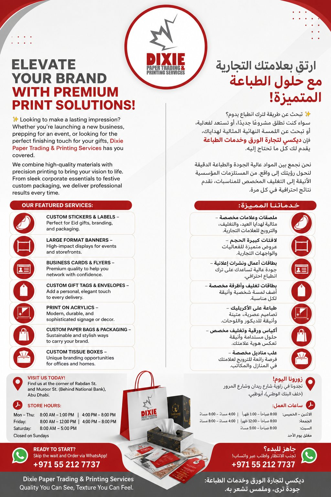

One print shop, every channel.
A print shop in Abu Dhabi with a long list of services and customers who read in English and Arabic. I designed the pieces that carry its brand from the logo on screen to the feed to the counter: logo animations, a one-minute bilingual promo, vertical social ads and promo posts.
- Client
- Print shop, Abu Dhabi
- My role
- Design, motion, print
- Languages
- English and Arabic
- Delivered
- 2 logo animations, 1 promo film, 4 social ads, print posts
The mark, in motion
Two logo animations from the same mark. The longer one tells the shop's story: a blank sheet lands under registration marks and the colour plates snap into place, the way a print run starts. The short one draws the frame and the maple mark in five seconds, for the start or end of any video.
One minute, every service
The promo walks through the services one at a time: offset printing, wide format, stickers and decals, invitations, graphic design. Then why to choose the shop, where to find it and how to get in touch. Every line is set in English and Arabic side by side, so one film works for both audiences.
Cut for the feed
The same story, cut down for the phone. Each ad has its own job: one plays like an app (upload, pick a product, get a quote), one runs through the services fast, and one pushes the brand into a bolder neon night-city look for the feed. All of them close on a call to action.
And on paper
The promo post lists the featured services, from stickers and banners to paper bags and tissue boxes, with store hours and a WhatsApp call to action, in both languages. Same red, same type, same tone as the films, set up as a print-ready file.

What holds it together
- One redThe shop's red leads every piece, on screen and on paper.
- Two languages, one layoutEnglish and Arabic share the frame instead of taking turns.
- Every piece ends with a next stepWhatsApp, a visit or a quote, never just a logo.